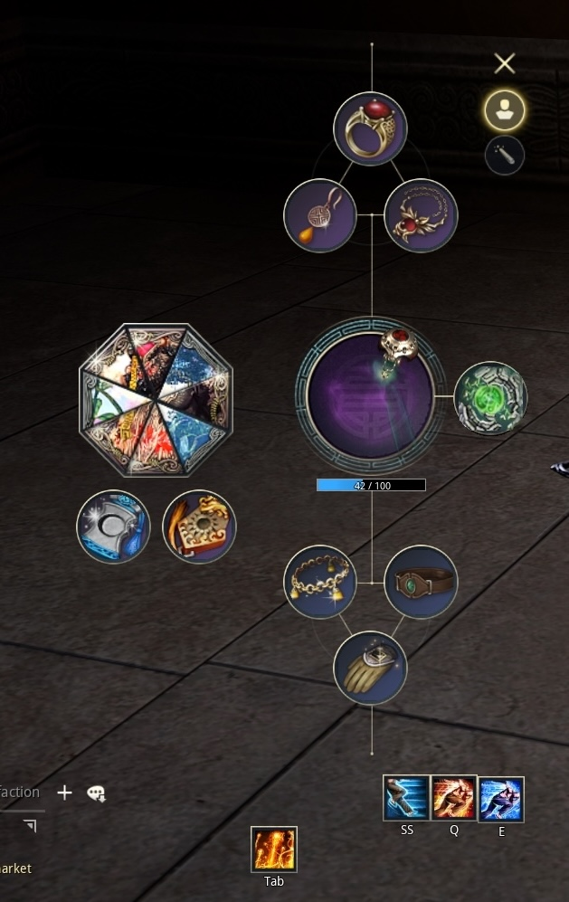
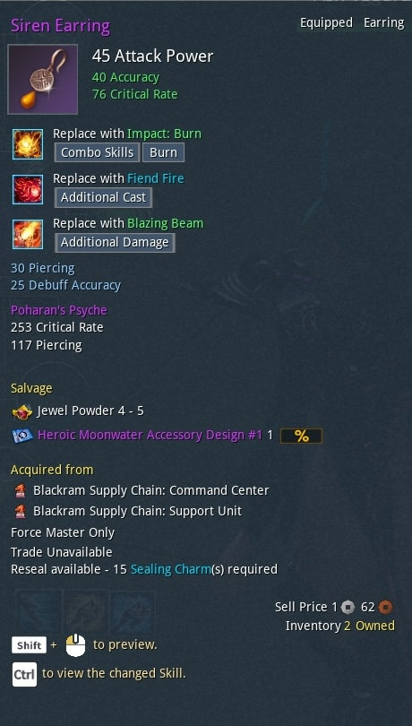
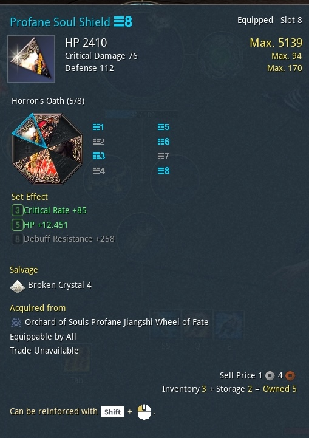
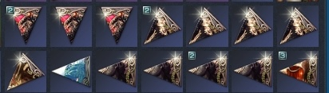

Videogames are my biggest passion, and trying to play well is something I do whenever I enjoy a game. For me, minmaxing is part of the fun.
Not all games can be optimized in the same way. In a lot of cases, it’s a combination of multiple factors, from mechanics to theorycrafting. As you might imagine, this post will focus on the latter.
What is this about?
The idea behind this post and the next posts in this series is trying to optimize how I play a specific game, and describing how I did it. For this series I will be talking about a MMORPG called Blade & Soul NEO. The original Blade and Soul is almost 10 years old, but a “Classic” version was released a few weeks ago, and after clocking more than 4000 hours on the original version, I decided to give the revamp a try.
Overall, I have been enjoying my time, and as a result I started looking into ways to improve my gameplay. In particular, I looked into how I could improve how fast I can kill bosses in PvE (Player vs Environment). Unsurprisingly, part of the solution is just getting better equipment. However, this got me thinking: how can I optimize the equipment I have to deal as much damage to bosses as I can?
One thing led to another, and I ended up writing code that would generate all possible combinations of equipment sets to find the best. I had a lot of fun working on it, and I thought it might be interesting, so I decided to write about it in these posts.
So, maybe you’re interested in the game itself, or in how I used Python, Google Docs, and various AI tools to maximize my deepz. Or maybe you’re just interested in the ramblings of a mad man that clearly has way too much time on his hands. In any case, please follow along and dive into the rabbit hole with me!
The basics: how does equipment affect a character?
Like in many other games, character attributes (or stats) in Blade and Soul are given by a combination of base stats and additional stats. Base stats depend on the character’s class, level and some other sources, and remain mostly constant over time. On the other hand, additional stats are provided by a character’s equipment, and can change very easily simply by swapping different equipment pieces.
Attributes can be either offensive, or defensive: the first category includes Attack Power (AP), Accuracy, Critical Rate, and Critical Damage; the second HP, Defense, Evasion, and some more. I will focus mostly on the offensive stats, as defensive stats are not as interesting to optimize, and are often treated as “dump stats”.

Equipment in BnS can be divided broadly in weapon and accessories, soulshields and badges. All items can have one or more attributes, whose value will be added directly to the base stats of the character.

This earring, for example, has 40 Accuracy and 76 Critical Rate (let’s ignore all the other stats for now). By equipping it, the Accuracy and Critical Rate of my character will increase by 40 and 76 respectively.
Soulshields provide additional attributes, which are added to the base stats like other equipment. For example, this soulshield gives HP (increasing how much damage my character can take), as well as Critical Damage and Defense. 
Each piece of equipment (or soulshield slice) is generated with a random set of statistics, and a random amount for each statistic. As a result, a player may collect a large number of copies of the same piece, and need to choose which one to use. This is particularly important for soulshields, because it is very easy to obtain their copies:

Given this context, the problem I am try to solve is the following:
I have many copies of each accessory, and a huge number of possible combinations of accessories. How can I find the best set of equipment to use to maximize the damage my character deals to bosses?
To start working towards a solution, I first need to define how damage is dealt, and how to integrate that in my problem formulation, so that’s what the next section is for.
Damage in Blade and Soul: why and how
In PvE, the objective is dealing damage to enemy bosses to reduce their HP to 0 before they do the same to the player. In fact, the main gameplay loop involves killing bosses, getting their loot, improving equipment with the loot, then challenging stronger bosses for even better loot.
Typically, boss fights require players hit the bosses as hard as possible, while executing a set of mechanics (avoiding the boss’ attacks, activating items in the arena etc.). If a player is executing everything correctly, then better attributes lead to better damage. In general, having more damage makes fights easier. Furthermore, some bosses have an enrage timer that will immediately kill the player if they cannot eliminate the boss in time.
I have been talking about damage to bosses all this time, and it’s now time to define how damage is calculated. For this, I will be using a damage formula that was shared in the community, and that goes as follows: \[ Damage = AP \times (Crit\% \times CDmg + (1-Crit\%)) \]
The Attack Power (AP) is the main offensive stat, as all damage is multiplied by this value; additionally, skills multiply this value by some modifier that depends on which skill is being used. \(Crit\%\) is the probability to land a “Critical hit”: a Critical hit deals additional damage equal to \(AP\times CDmg\). Since not all hits are critical hits, the “Damage” is given by the damage of critical hits weighted by how frequently they occur, in addition to the damage of hits that do not crit.
As an example, let’s consider \(AP=500\), \(Crit\%=55\%\), \(CDmg=150\%\): the equation would become \[ Damage = 500 \times (0.55 \times 1.5 + (1 - 0.55)) = 687.5 \]
In a vacuum, a character with 687.5 AP and 0 \(Crit\%\) would deal the same damage as a character 500 AP, 55% of crit chance, and 150% of bonus damage for crits. For simplicity, I am ignoring all sorts of class interactions with crits, and just taking the raw numbers.
Clearly, better Crit% and CDmg would result in a larger value for Damage, and therefore better DPS: in practice, those are the main stats that player try to maximize.
However, what we see on a character’s profile is a raw number for AP, Critical rate and Critical damage. How can we turn those into the multipliers used above? Well, while there are no official numbers for this, the community managed to get an estimate of the formula (source), which is what I am using here: \[ Crit\% = \frac{Crit \times 96.98979}{Crit + 1124.069} \] where \(Crit\) is the Critical rate attribute. \[ CDmg = \frac{CD \times 290.8}{CD \times 2102.36} + 125 \] where \(CD\) is the Critical damage attribute.
Usually, players strive to maximize Attack Power, Critical rate and Critical damage. The problem then becomes understanding how these statistics affect the final damage output, and selecting the equipment that leads to the best returns.
In conclusion, now I have a (rough) estimation of how much damage my character deals given a certain amount of AP, Critical rate, and Critical damage. While it is not perfect, it’s still a good starting point to optimize for.
To summarize, and what’s next
This was a lot! Let’s wrap up:
- I am trying to optimize the equipment of my character in the game Blade and Soul.
- My objective is maximizing the amount of damage I deal to enemy bosses.
- I need a metric that lets me whether a set of equipment is good or not.
- I can use datamined formulas to estimate my damage, and use that as as my “objective function”.
Now that I have a formula, I have a better idea of how to rank sets of equipments, and now I need to figure out how to generate all the combinations. This and some more subjects I’d like to cover include:
- Drawing figures that use the damage formulas to draw some preliminary conclusions from.
- Writing some software that can select the best set of soulshields given a list of pieces.
- Figuring out a reliable way of getting the soulshield statistics.
- Re-implementing the code I wrote in Python using a different programming language to exercise.
If you got this far, I hope you found the post interesting, and thanks a lot for reading!